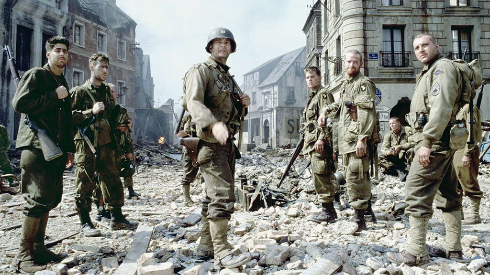

“Salvar al Soldado Ryan” (Saving Private Ryan, 1998) és una pel·lícula de Steven Spielberg ambientada a la Segona Guerra Mundial. Després del Desembarcament de Normandia (Dia D), un grup de soldats nord-americans rep una missió molt especial: localitzar i salvar el soldat James Francis Ryan, l’únic germà supervivent d’una família que ha perdut quatre fills a la guerra. El capità John Miller lidera l’equip, que avança per França ocupada trobant obstacles, combats i dilemes morals. La pel·lícula és famosa per l’escena inicial del Dia D, considerada una de les més realistes de la història del cinema.
Aqui hi podras trobar...